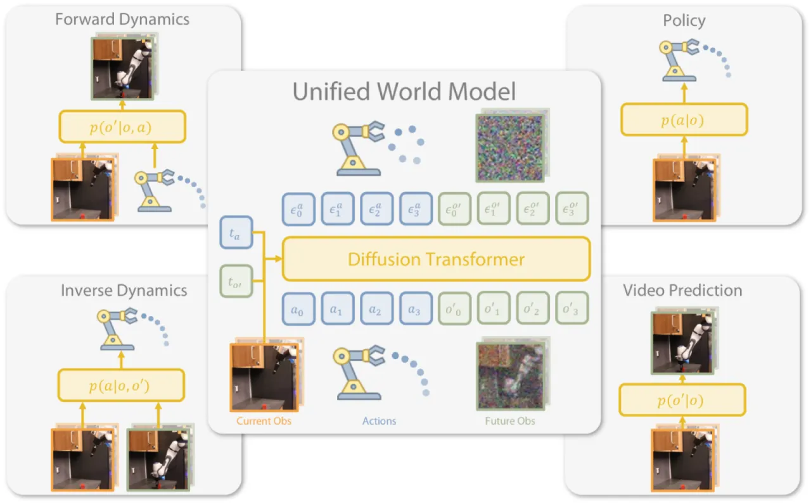
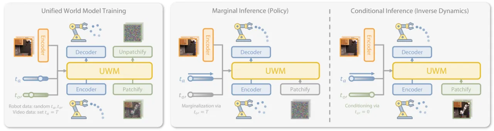
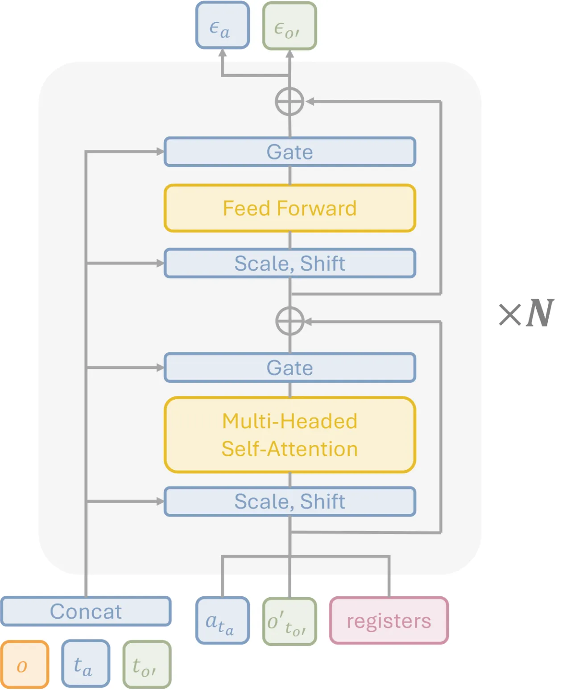
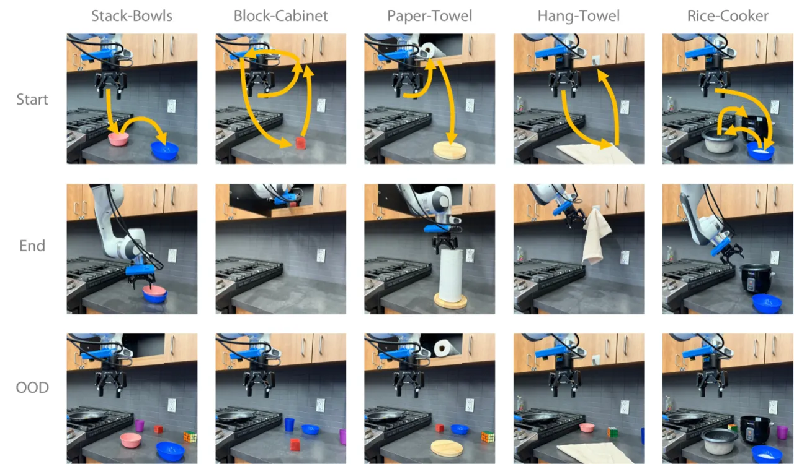
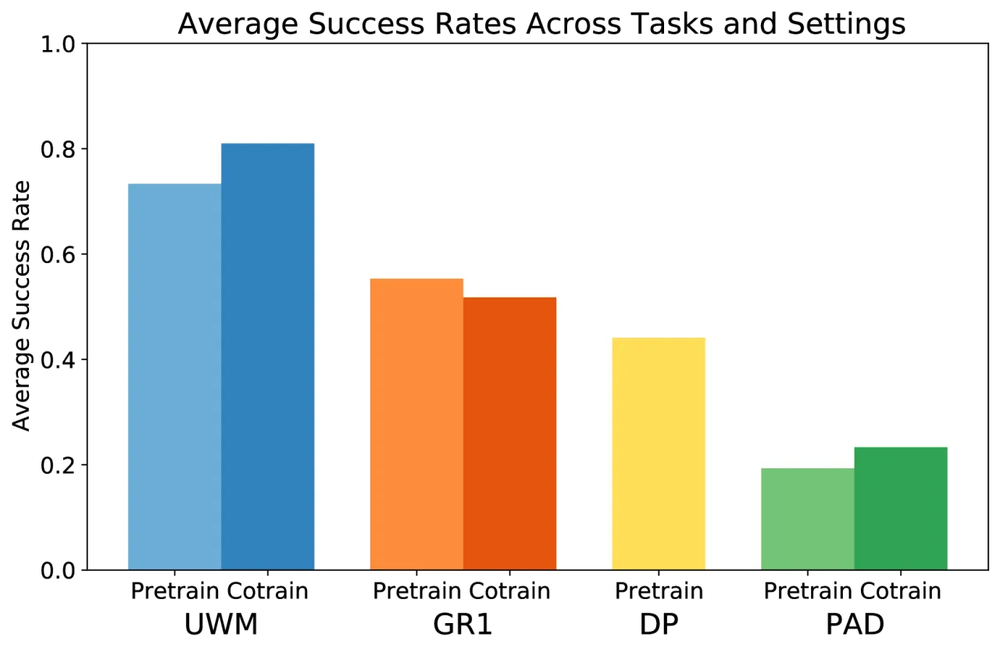
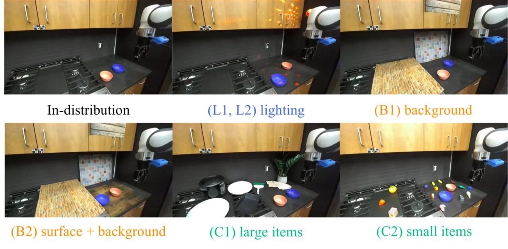
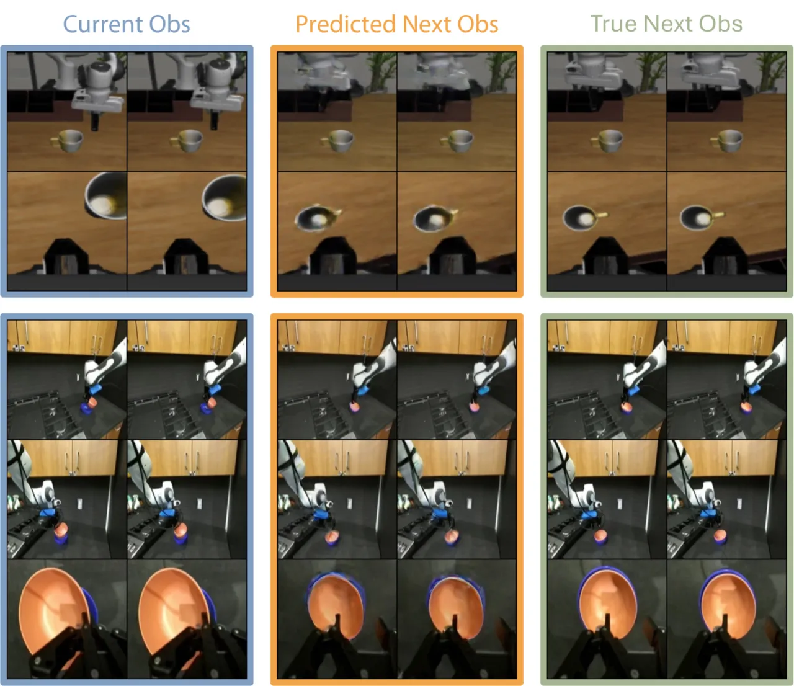
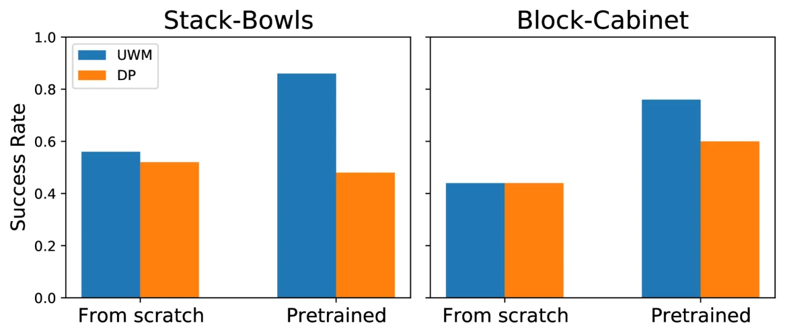

UWM（Unified World Models）将 action diffusion 与 video diffusion 融合在同一个 Transformer 架构中，通过对每个模态独立采样扩散时间步来决定该模态是"生成"还是"条件化"，从而用一个模型同时实现策略、前向动力学、逆向动力学与视频预测四种推断模式。在真实机器人操作与 LIBERO 仿真基准上，UWM 预训练后微调的成功率显著超越 Diffusion Policy，对视觉扰动的鲁棒性提升尤为突出。
机器人学习的核心挑战在于：带动作标注的数据十分稀缺，而无标注的视频却海量存在。现有方法要么专注于行为克隆（忽略了大量无动作视频），要么单独训练视频预测模型再桥接到策略，难以在同一框架中统一这两类监督信号。此外，将动力学模型与策略分开训练会导致信息割裂，错失互相强化的机会。
"We propose Unified World Models (UWM), a framework that integrates an action diffusion process and a video diffusion process within a unified transformer architecture, where each modality is independently controlled by its own diffusion timestep."

UWM 在同一个扩散 Transformer 中对 action 序列与未来观测的 latent 同时去噪。训练时对每个模态独立采样噪声时间步（t_a 与 t_o'），使模型暴露于全部噪声水平组合；推断时将某模态的时间步固定为边界值，即可将其"边缘化"（设为 T）或"条件化"（设为 0），从而选择所需的推断函数。

传统方法（如 PAD）将动作与观测的扩散时间步耦合为同一个值，导致两种模态只能同步加噪/去噪，无法独立控制。UWM 的训练目标为：
"L(θ) = E[w_a · ||ε_a − f_θ(a_{t_a}, o'_{t_o'}, o, t_a, t_o')||² + w_o' · ||ε_o' − f_θ(a_{t_a}, o'_{t_o'}, o, t_a, t_o')||²]"
通过令 t_a 与 t_o' 独立均匀采样，模型学会在任意噪声水平组合下同时去噪，从而在推断时：

预训练阶段：在 2000 条来自 DROID 数据集的带动作 Franka 机器人轨迹上训练 100K 步，覆盖多样化任务与场景以增强泛化能力。Co-training 阶段：额外混入 2000 条无动作视频轨迹，训练时将 t_a 固定为 T 以掩蔽动作监督，从而充分利用无标注视频。
实验分为两大平台：（1）真实 Franka 机器人，5 项操作任务（Stack-Bowls、Block-Cabinet、Paper-Towel、Hang-Towel、Rice-Cooker），设置 in-distribution（ID）与 out-of-distribution（OOD，改变光照/背景/杂乱物）两类评估；（2）LIBERO 仿真基准，90 任务预训练 + 10 任务微调。对比基线：Diffusion Policy（DP）、PAD（联合时间步版本）、GR1（确定性视频-动作 Transformer）。

| 任务 | UWM Pretrain | UWM Co-train | Diffusion Policy | PAD | GR1 |
|---|---|---|---|---|---|
| Stack-Bowls (ID) | 0.86 | 0.92 | 0.72 | 0.74 | 0.68 |
| Block-Cabinet (ID) | 0.76 | 0.84 | 0.66 | 0.60 | 0.62 |
| Paper-Towel (ID) | 0.78 | 0.86 | 0.70 | 0.68 | 0.64 |
| Hang-Towel (ID) | 0.82 | 0.86 | 0.72 | 0.68 | 0.66 |
| Rice-Cooker (ID) | 0.60 | 0.65 | 0.55 | 0.50 | 0.52 |

| 方法 | 平均成功率 ± 95% CI |
|---|---|
| GR1 | 0.58 ± 0.14 |
| PAD | 0.57 ± 0.19 |
| Diffusion Policy | 0.71 ± 0.12 |
| UWM（本文） | 0.79 ± 0.11 |
在 Stack-Bowls 任务的 OOD 条件下（光照 L1/L2、背景 B1/B2、杂乱物 C1/C2），UWM co-trained 版本在"背景"与"杂乱物"类 OOD 成功率达 70%，而 Diffusion Policy 基线仅为 40%（来自 Table IV）。

UWM 的前向动力学模式（令 t_a = 0）能准确预测机器人与物体的未来姿态，验证了模型对物理动力学的内在理解。逆向动力学模式（令 t_o' = 0）在轨迹追踪任务中的成功率高于直接策略模式。

图 10 对比了从头训练与在 UWM 预训练模型基础上微调的效果：随着微调数据量增加，预训练版本的成功率曲线始终高于从头训练的 Diffusion Policy，表明 UWM 的预训练具有更强的可扩展性（"UWM scales more effectively with pretraining than DP"）。Register tokens 的消融同样确认了其对多模态特征共享的实质贡献。

论文指出仿真环境中 OOD 设置的性能增益小于真实机器人，"potentially due to simpler dynamics in current simulations"。现有仿真器的物理保真度有限，导致多样化视频数据的潜在价值未被充分挖掘。
预训练阶段仍依赖带动作标注的 robot 轨迹，无动作视频仅作为 co-training 补充。若动作与观测数据来自不同机器人或跨具身形态，对齐难度大，限制了对完全异构数据的利用。
Diffusion 推断本身需要多步迭代去噪，扩散 Transformer 的参数量也较大。论文在附录中仅简短提及计算需求，未给出详细的推断延迟数据，实时控制场景下的适用性尚需验证。
OOD 实验仅在光照、背景、杂乱物三类场景下系统评估，对更复杂扰动（如大幅度姿态变化、新型物体类别）的鲁棒性尚未深入分析。